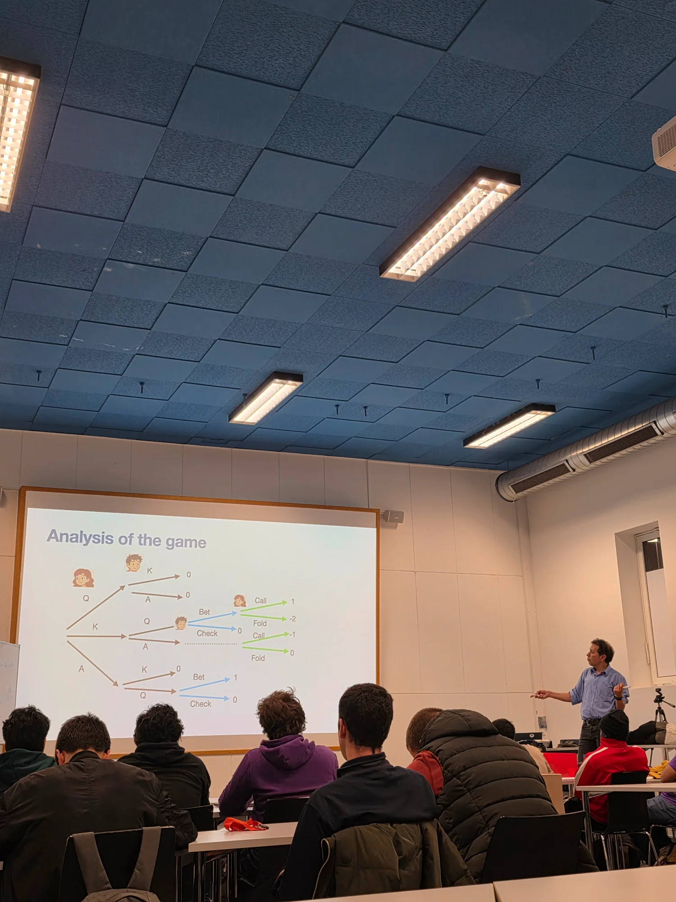
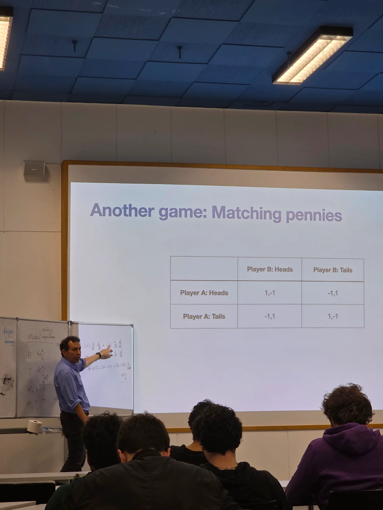
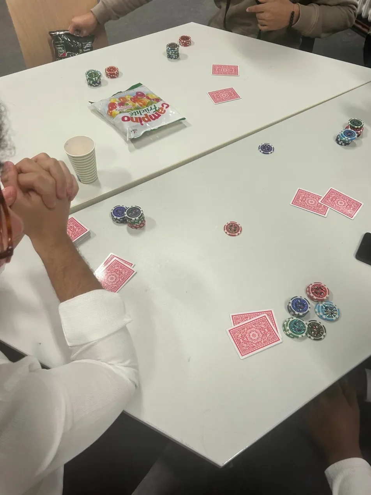
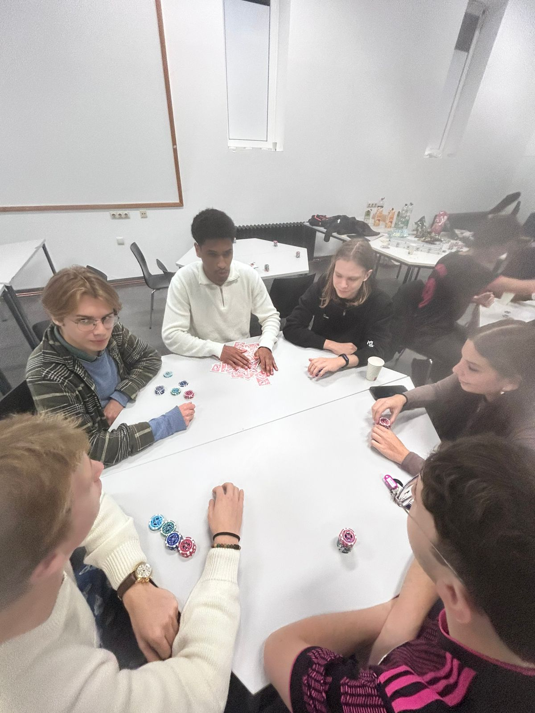
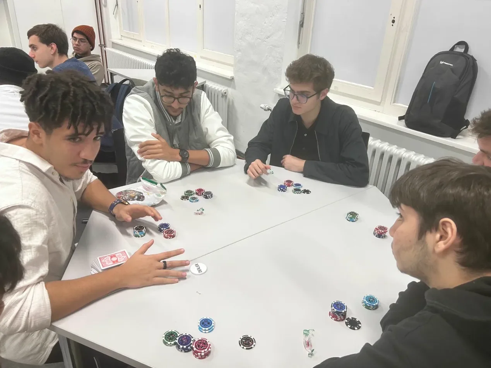
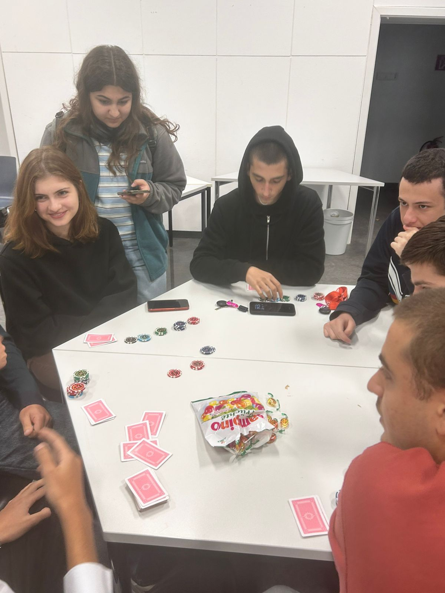
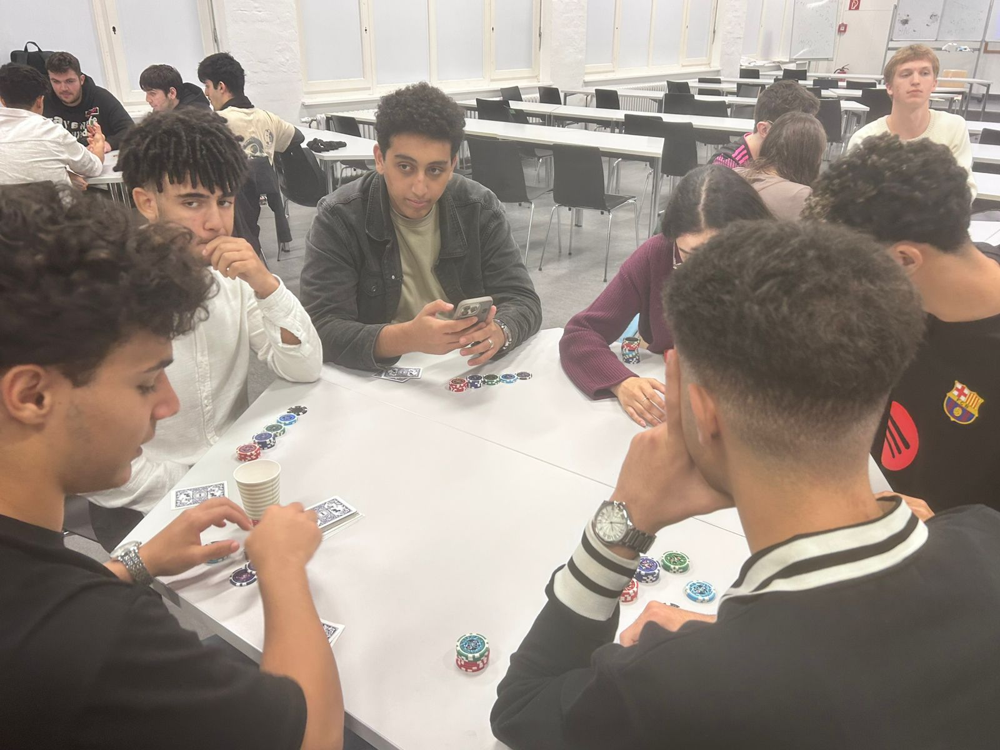

Why Mathematics Proves That Lying Actually Works
Ever wondered why your poker-faced friend keeps winning, even with terrible cards?
It's not luck—it's mathematics!
This was the 3rd episode of "The Math Behind..." series, where we explored the mathematics of poker and game theory. Led by Professor Keivan Mallahi Karai, the seminar tackled a fascinating question: Why does bluffing actually work? And more importantly, can we prove it mathematically?
Professor Mallahi Karai started with a simplified version of poker—a game he designed specifically to demonstrate the core mathematical principles without overwhelming complexity. Step by step, he built up the concepts, showing how probability, expected value, and Nash equilibrium all come together to explain why bluffing is not just a psychological trick, but a mathematically optimal strategy.
Every decision in poker comes down to expected value (EV)—the average amount you can expect to win or lose over the long run. When you calculate pot odds and compare them to the probability of completing your hand, you're doing pure mathematics. A positive EV decision is profitable over time, even if it doesn't work out in a single hand.
Modern poker is heavily influenced by Game Theory Optimal (GTO) play. This approach uses Nash equilibrium—a state where no player can improve their outcome by changing strategy alone. When you play GTO poker, you balance your ranges mathematically so that opponents can't exploit you, regardless of what they do.
This is where bluffing becomes essential: if you only bet with strong hands, opponents will simply fold every time. But if you occasionally bluff in mathematically calculated proportions, you force them into impossible decisions.
The key insight is that optimal poker requires mixed strategies—randomly mixing between different actions (betting, checking, folding) based on calculated frequencies. You can't always bet with the nuts and always fold with nothing, because patterns are exploitable. The mathematics tells us exactly how often to bluff to remain balanced.
After the lecture, we didn't just leave it at theory. The seminar concluded with an actual poker game where Math Society staff served as table dealers. Instead of betting money, participants wagered candies—making it both fun and accessible while still demonstrating real poker dynamics.
Watching theory transform into practice was amazing. You could see players start to think differently about their decisions, considering not just their cards but the mathematical implications of their betting patterns and opponents' possible ranges.

Professor Keivan Mallahi Karai introducing game theory concepts

Building up complexity with classic game theory examples

The candy stakes on the table - mathematics meets sweet rewards!

Theory meets practice - students applying game theory at the tables

Calculating odds and making strategic decisions

Betting candies and calculating probabilities in real-time

Multiple tables running simultaneously - Math Society staff as dealers
1. Mathematics Governs Strategy: What seems like psychology and "reading people" is actually grounded in probability theory and game theory. The best players aren't psychics—they're mathematicians who understand equity, frequencies, and equilibrium.
2. Optimal Play Requires Unpredictability: The math proves that being perfectly balanced means being unpredictable. This is why GTO strategies often involve randomization—you need to keep opponents guessing in mathematically precise ways.
3. Real-World Applications: Game theory extends far beyond poker. The same principles apply to economics, military strategy, negotiation, and even evolutionary biology. Understanding Nash equilibrium helps us model competitive situations in countless fields.
4. Theory Meets Practice: Having the poker game immediately after the lecture reinforced the concepts. It's one thing to understand the math on paper, but quite another to apply it in real-time decisions with candy (or money!) on the line.
If you're interested in diving deeper into the mathematics of poker, resources like "The Mathematics of Poker" by Bill Chen and Jerrod Ankenman provide rigorous treatment of game theory concepts. For those interested in GTO strategies, solver software like PioSolver demonstrates how these mathematical principles translate into actual play.
And remember: the next time someone calls your bluff, you can confidently tell them you were just maintaining mathematical equilibrium!